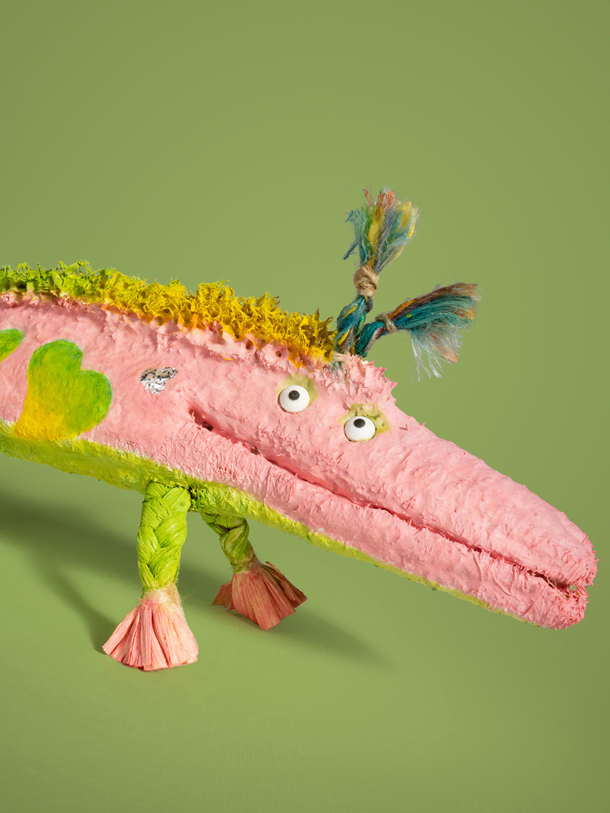
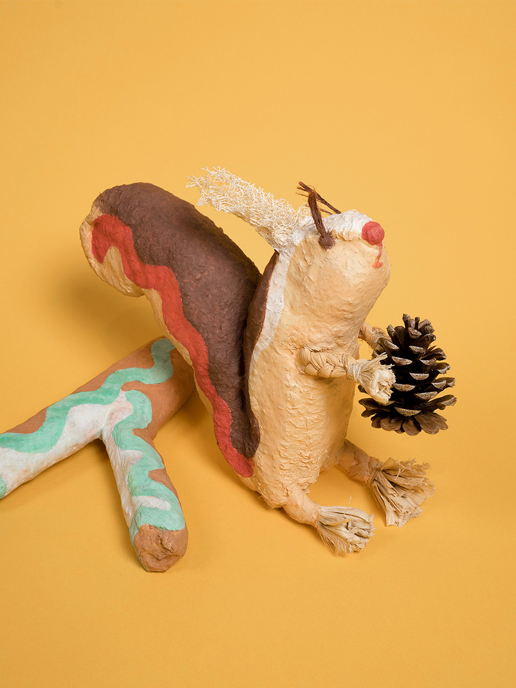
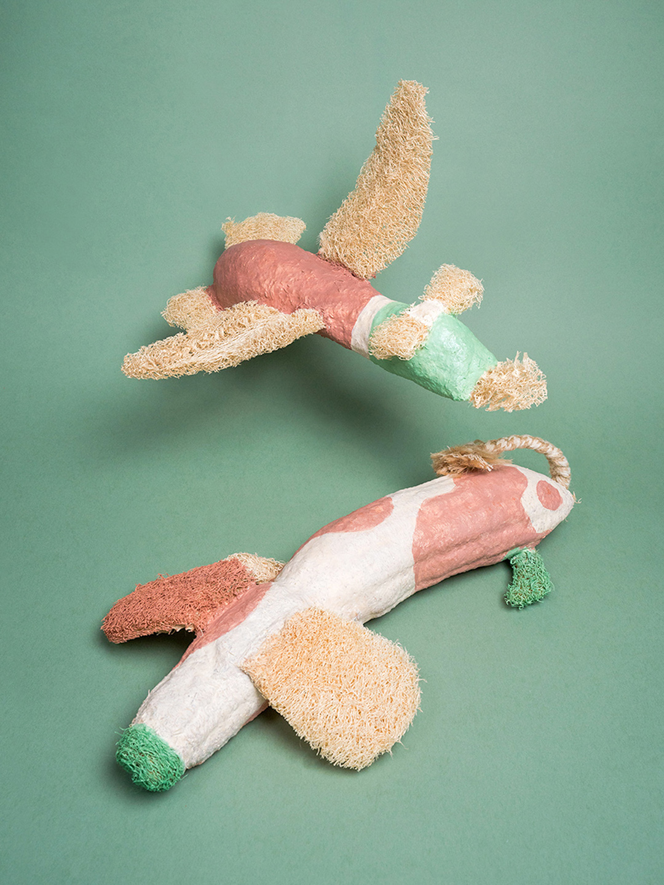
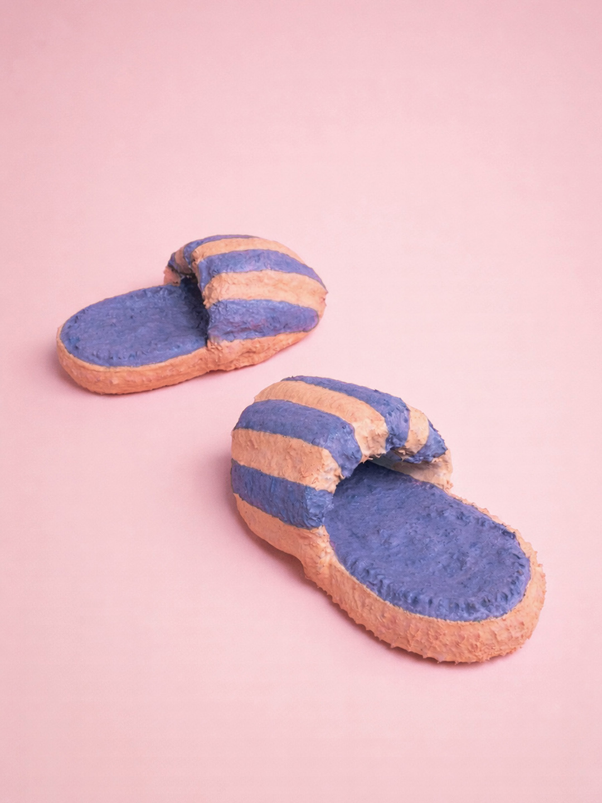
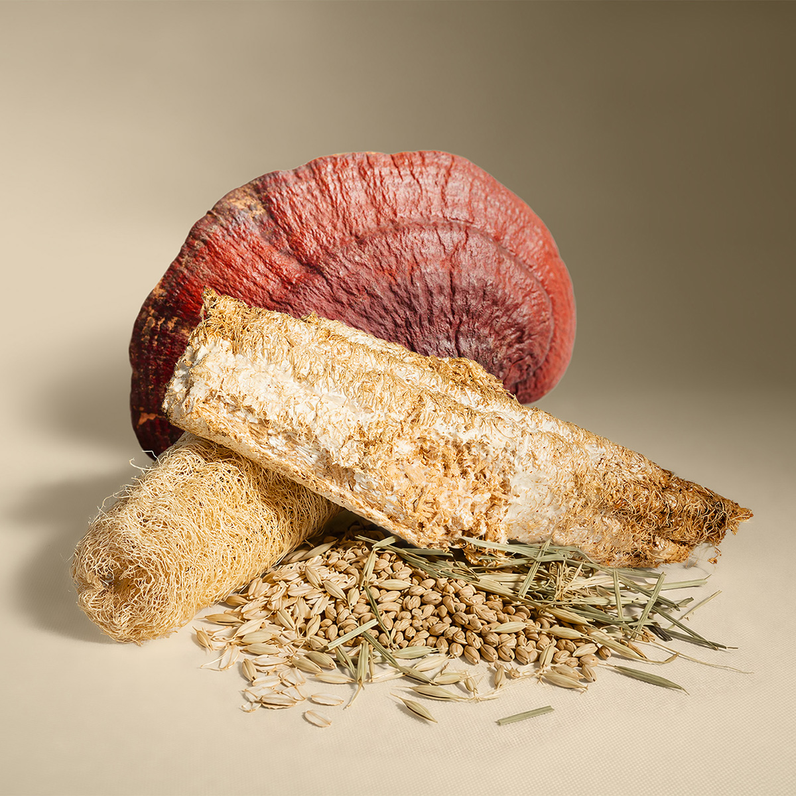
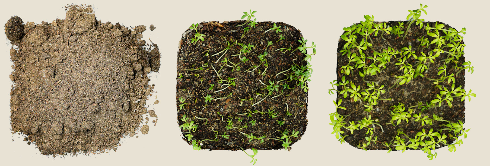
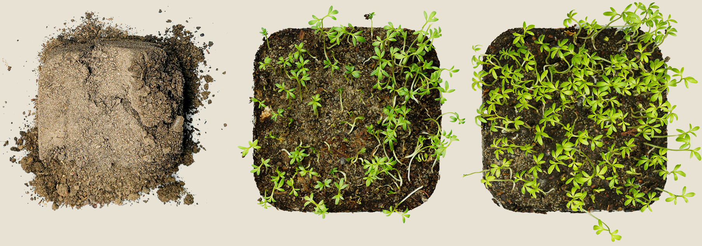

Material
Economically and environmentally affordable, sustainable, and locally adaptable. Substantially lower in resource and energy demand than synthetic and cotton-based alternatives.
Pet soft toys are widely used for behavioural and emotional support, yet synthetic materials and anthropomorphic design also pose animal health risks and growing environmental concerns. Loomyco addresses this dilemma by reconnecting animals’ behavioural continuum of play–tear–eat with biomaterial’s ecological cycles of grow–nourish–regenerate, integrating suppressed behaviours as safe, healthy and meaningful parts of ecological transformation.




Scroll to view prototype family
Multispecies participants
Animals · Plants · Fungi · Microbes
Ecosystem functions
Behaviour support · Nutritional flow · Soil regeneration
In the US alone, over 634 million dog toys end up in landfills each year, because most are made from persistent synthetic materials, wear out quickly and are frequently discarded. Treats and chews offer another route, but address only limited behavioural needs while contributing to nutritional imbalance and a higher carbon footprint. Other solutions often rely on training, restriction or indestructibility. This creates a recurring domestic mismatch: what supports instinct often becomes unsafe, wasteful or ecologically costly, while what is safe and acceptable often suppresses natural behaviour.

Loomyco is grown from digestible materials consisting of loofah scaffold, mushroom mycelium and plant-fibre substrates. Rather than failing when damaged, it keeps functioning through use, fracture, ingestion and eventual ecological return. Its form, hardness, sensory and nourishment profile are highly tunable to adapt to different species and behavioural needs.
Form and internal support, tear resilience, structural integrity after damage.
Seamless natural binder, meat-like palatability, immune-support value.
Digest support, additional nourishment, structural reinforcement.
Regulates moisture, extends shelf life, visual engagement.
Play → Tear → Eat → Regenerate
Loomyco reconnects animals’ behavioural continuum with biomaterial’s ecological cycles of grow, nourish and regenerate.
Loomyco is designed to remain durable in use, while allowing transformation beyond use.

without Loomyco
with LoomycoEconomically and environmentally affordable, sustainable, and locally adaptable. Substantially lower in resource and energy demand than synthetic and cotton-based alternatives.
Scaffold-based forming without rigid moulds, allowing flexible shaping and lower-cost production compared to conventional mould-dependent forming.
Combines handcraft with grow-made production. Handcraft allows natural variation in biomaterials to become a creative resource, while growth takes over part of the fabrication work.